← Índice de los 69 tutes de IDA
Tute 11 · Bug de IDA 6.8
se conecta con: Herramientas · IDA · Instrucciones · Flujo · Debugger · Números
INTRODUCCIÓN AL REVERSING CON IDA PRO DESDE CERO PARTE 11.
BUG EN VERSION 6.8
Antes de seguir vamos a ver si podemos arreglar el bug que se produce en el IDA en la versión 6.8, el cual fue fixeado en la versión 6.9 pero esa no la tenemos, para ver si la versión suya tiene el BUG, abren el IDA, y en una instrucción hacen ALT mas M que es similar a colocar una marca (JUMP-MARK POSITION) y luego en esa misma instrucción hacemos click derecho.
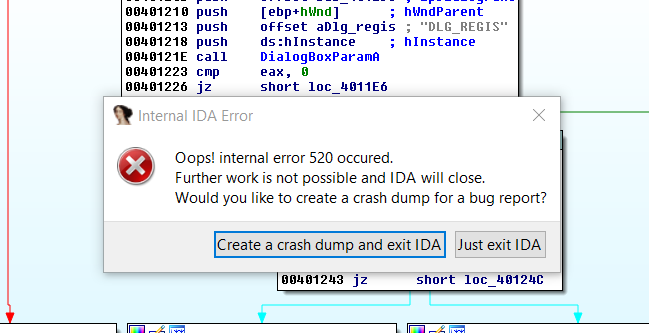
En internet dice como fixear este bug veamos si podemos hacerlo y si funciona bien por lo cual dejaremos una copia de los módulos originales guardados.
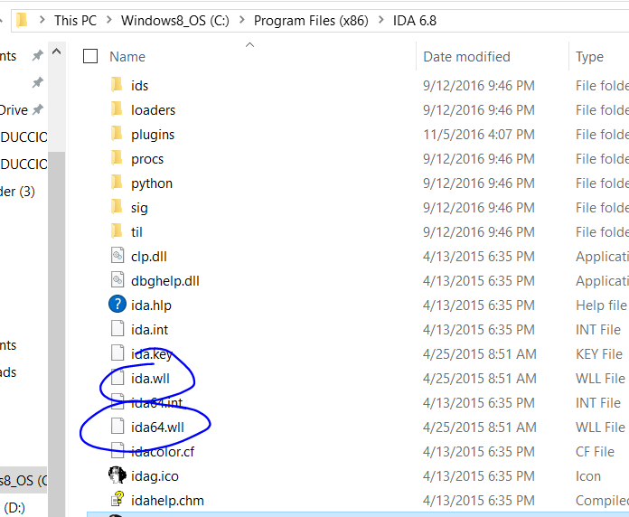
Tomemos primero ida.wll y abrámoslo con un editor hexadecimal como el HXD, con permisos de administrador.
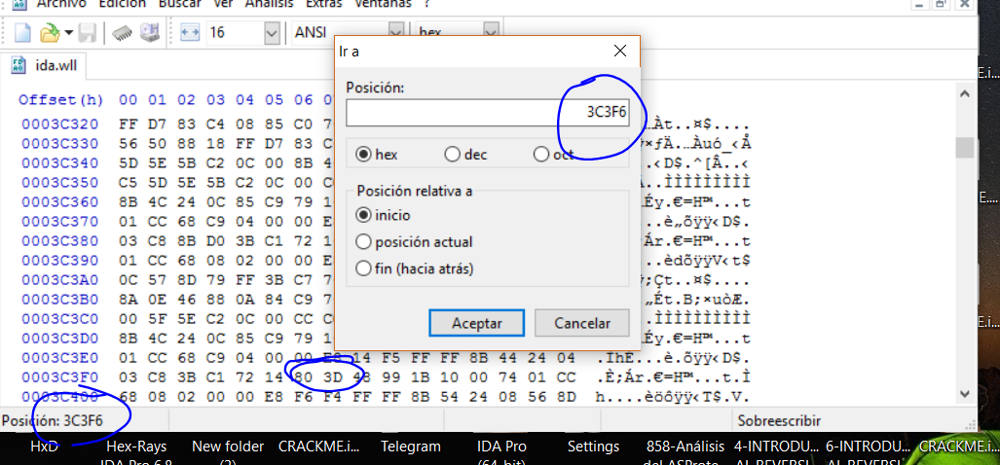
Cambiamos los bytes 80 3d del offset 0x3c3f6 por EB 30.
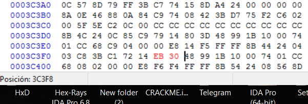
Copie la original a otro lugar antes de modificarla y luego la renombre y la copie en la misma carpeta como backup.
La otra es la ida64.wll y hacemos lo mismo en 0x41606 80 3d por EB 30.
Veamos si sigue el BUG.
Probamos lo mismo ALT + M en una instrucción y luego click derecho, VOILA no crashea, esperemos que funcione sin efectos secundarios jeje.
No quise abrumar con toda teoría junta desde el inicio por eso fui mezclando con algo de ejercicios, pero nos queda ver antes de continuar la definición de algunos flags mas que son importantes.
FLAGS
CARRY FLAG
Ya vimos algo del CARRY FLAG en el capítulo anterior, el mismo se activa en operaciones de números sin signo cuando el resultado es negativo como en el caso anterior o desborda el máximo posible en una suma, veamos los ejemplos en el debugger.
Si arrancamos el CRACKME.exe en el IDA como debugger y paramos en el entry point y cambiamos la instrucción a ADD EAX, 1.
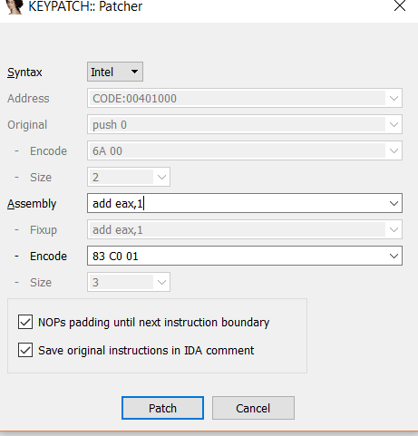
Ponemos EAX=0xffffffff con click derecho-MODIFY VALUE.
Si se rompe el grafico podemos hacer click derecho-CREATE FUNCTION en el inicio de la misma para arreglarlo,
Y traceamos la instrucción con f8, para que la ejecute, vemos que el CF se activa al desbordar el máximo positivo posible.
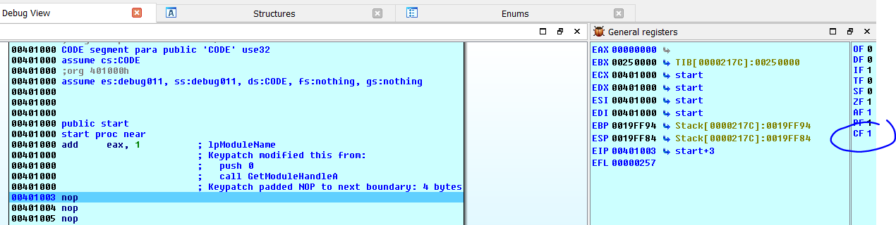
Lo mismo si abajo escribimos SUB EAX, EDX.
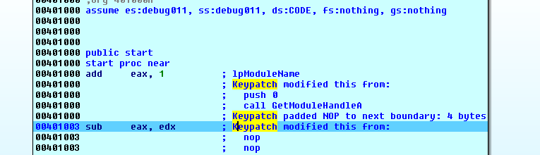
Ya vimos que, si al restar dos positivos el resultado es negativo, se prendera el CF porque el resultado da equivocado.
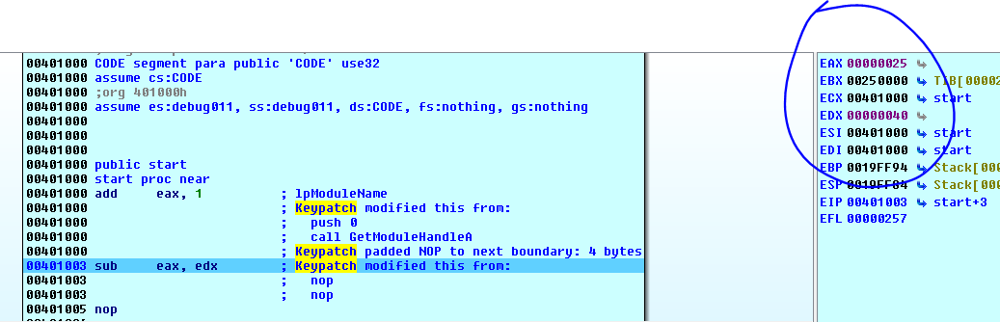
EAX lo modifico a 0x25 y EDX a 0x40 al tracear con f8, veamos si se activa el CF.
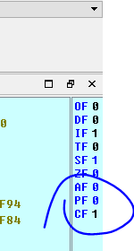
Se activó el CF si cambio EIP para ejecutar de nuevo esta resta, haciendo click derecho - SET IP en la instrucción del SUB EAX, EDX y cambio EAX a 0x100.
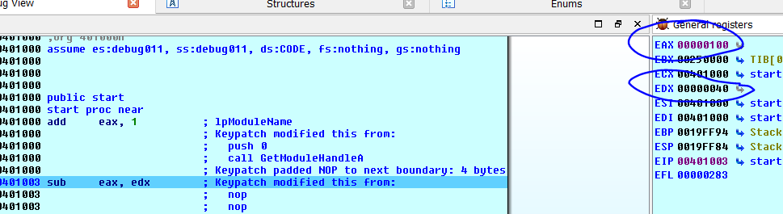
La ejecuto con f8.
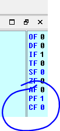
No se activó o sea que como conclusión general podemos pensar que en una cuenta de valores SIN SIGNO si se activa CF es que hubo un error en la misma de algún tipo.
OVERFLOW FLAG.
Es similar al caso anterior, pero para operaciones CON SIGNO, cambiamos EIP al ADD EAX,1 y ponemos EAX a 0x7fffffff.
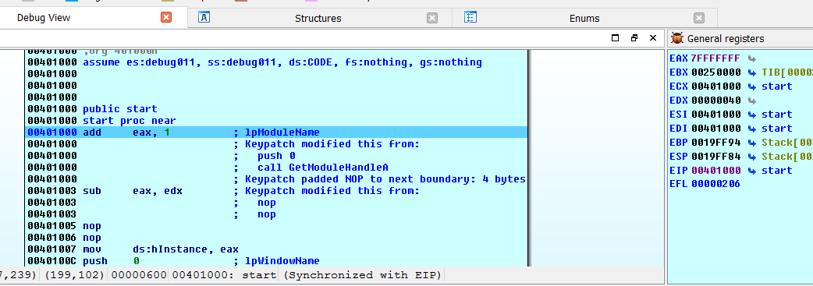
Si ejecuto f8.
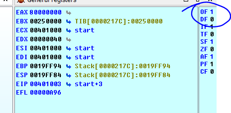
Vemos que se activó el OVERFLOW FLAG ya que en una operación con signo sumarle uno al máximo positivo 0x7fffffff hace que el resultado sea el máximo negativo y el resultado de la cuenta es falso.
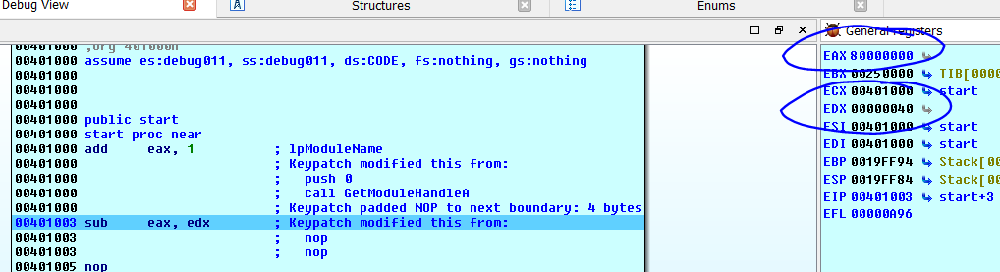
Si resto EAX y EDX con estos valores.
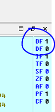
También se activa porque el máximo negativo 0x80000000 menos 0x40 da un valor positivo muy grande dando erróneo el resultado de la operación.
Por lo tanto, podemos sacar como conclusión que el OVERFLOW FLAG si se activa es que hubo un error en una operación CON SIGNO.
FLAG DE SIGNO
Este es sencillo se activa cuando el resultado de una operación es negativo, en cualquier caso. Solo determina el resultado del signo del resultado no si es correcta o incorrecta la operación.
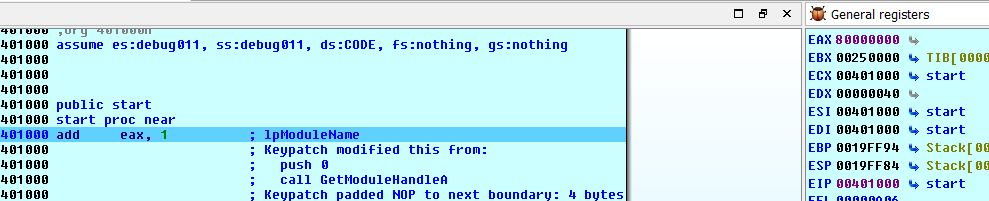
0x8000000 mas 0x1 se mantiene dentro del rango de los números negativos el resultado 0x8000001, por lo que se activa el SF, también vemos que el OF y el CF no se activan al no haber error en la operación sean ambos SIN SIGNO o CON SIGNO.
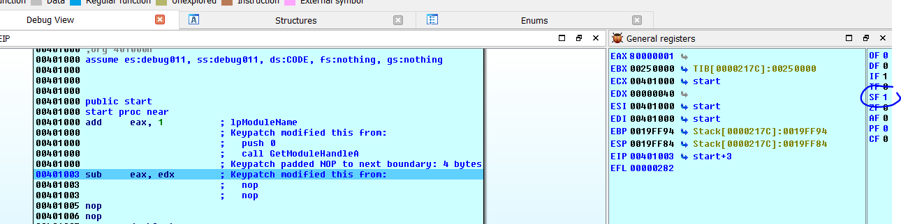
Obviamente el procesador cuando ejecuta la instrucción de una operación de dos registros no sabe si son SIGNED o UNSIGNED nosotros lo sabemos porque vemos los saltos condicionales siguientes, pero el procesador no lo sabe, así que en cualquier operación evaluara la instrucción como si fueran SIN SIGNO y CON SIGNO a la vez y variara los flags necesarios, como los saltos condicionales dependen de los flags, ahí será que el programa mirara el resultado del flag CF SIN SIGNO o OF CON SIGNO según el salto que haya, si por ejemplo hay un JB que es un salto SIN SIGNO mirara solo el CF y no le importancia al OF aunque ambos cambien.
ZERO FLAG
Este no depende del signo
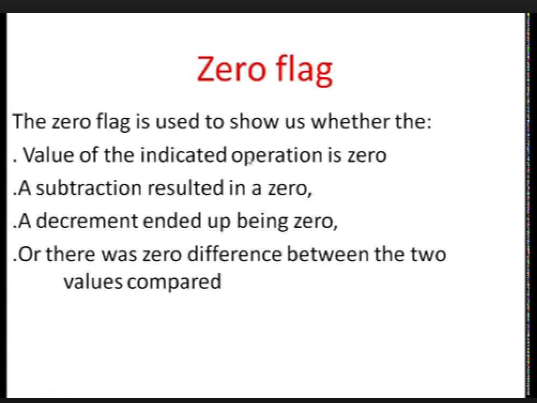
Se activa cuando en una comparación (la cual internamente es una resta) ambos miembros son iguales, cuando hay un incremento o decremento y el resultado es cero, o en una resta que de cero.
Podemos probarlo.
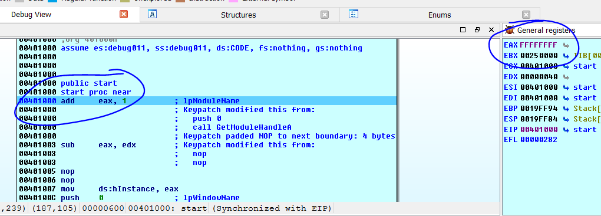
EAX le pongo 0xffffffff y al sumarle 1 que pasa.
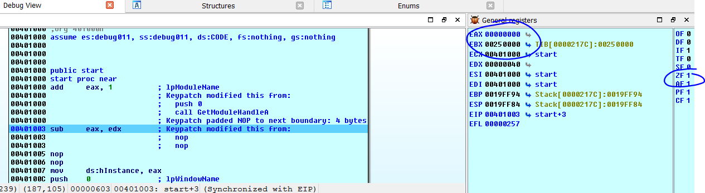
Vemos que se activa el ZF ya que el resultado es cero, y si consideramos ambos como SIN SIGNO, también se activa el CF ya que desbordo el máximo positivo, en cambio el OF no se activó porque si ambos son CON SIGNO -1 + 1 da cero y no hay error, tampoco el SF se activó ya que el resultado no fue negativo.
Esos los flags más importantes, veamos si colocamos a continuación un salto condicional que sucede.
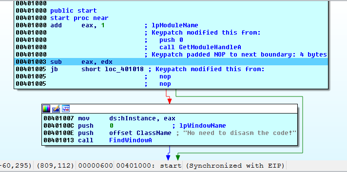
Cambio las instrucciones para que quede un SUB EAX, EDX y a continuación escribo un JB 0x401018.
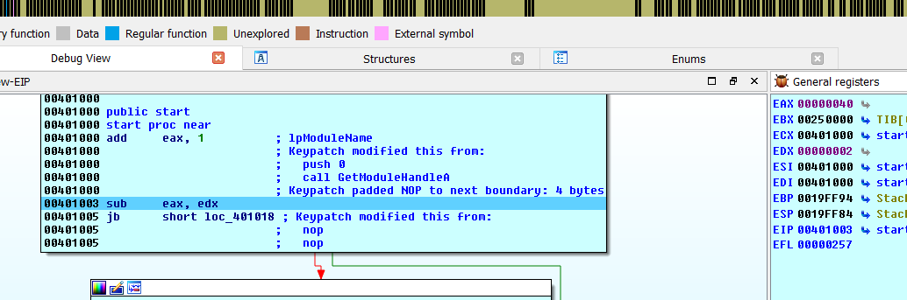
Pongo EAX=0x40 y EDX=0x2 y ejecuto el SUB solamente con F8.
Titila la flecha roja porque como EAX es mayor que EDX por lo tanto el salto no se efectúa, pero miremos los flags.
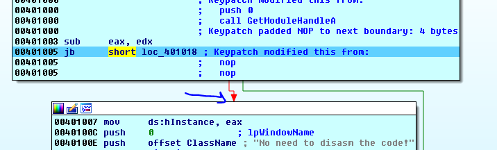
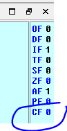
JB es un salto SIN SIGNO y salta si está activo el FLAG CF y como no se activó porque la operación fue correcta entre dos números positivos y el resultado es positivo lo cual significa que el primero es mayor que el segundo, por lo tanto, no salta.
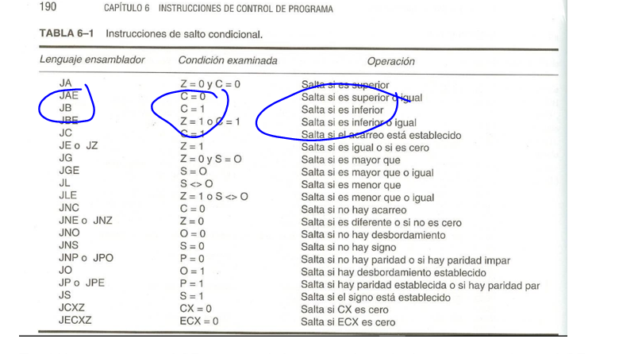
Pero si cambiamos EAX a 0x40 y EDX a 0x80 y vuelvo a repetir la resta.
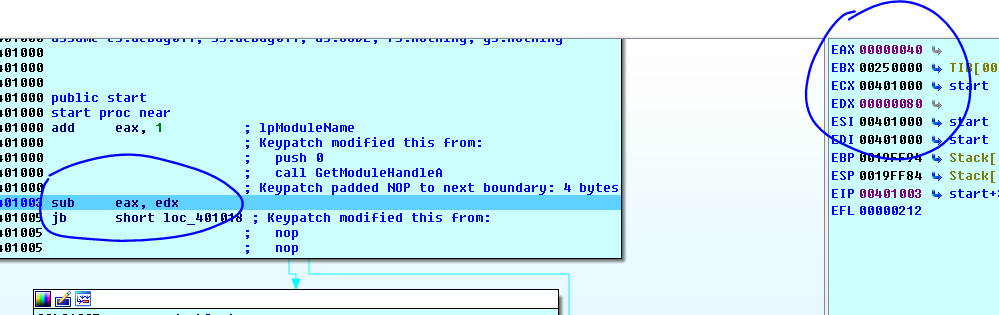
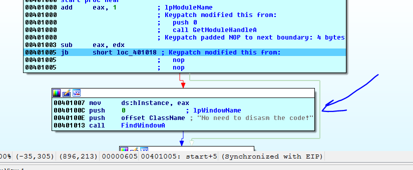
En este caso como EAX es más bajo que EDX el salto se tomará y seguirá por la flecha verde.
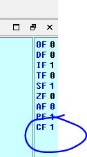
Como JB mira el CF saltara porque está activo ya que el resultado de una operación SIN SIGNO dio negativo y dio error.
También se activó el SF porque el resultado dio negativo y el OF no se activó ya que si ambos son SIN SIGNO la operación no da error ya que 0x40 – 0x80 da negativo y el resultado lo es.
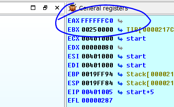
Como vimos JB salta según el estado del flag CF pero si lo cambio por un JL.
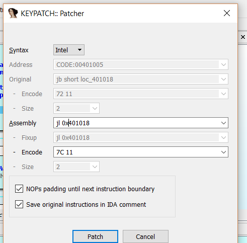
En ese caso cambia y va por la flecha verde porque el primero es menor que el segundo pero que flag mira el salto JL.
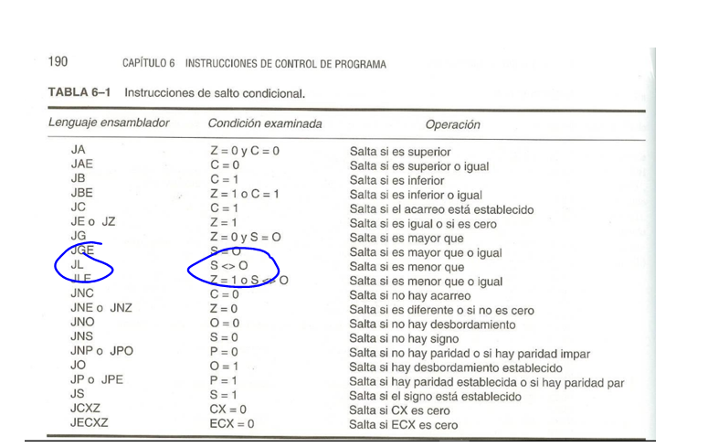
Vemos que el JL mira si el SF no es cero y en este caso es 1 así que también saltara lo cual es lógico ya que el primer miembro es menor que el segundo y el SUB es como una comparación CMP, solo que esta última guarda el resultado, así que el primero siendo menor que el segundo también saltara.
La conclusión del tema es que no es necesario mirar los flags para saber que pasara en un salto condicional, eso pertenece al funcionamiento interno, con saber si son iguales saltara un JZ si es menor sin signo saltara si es un JB si es menor con signo saltara si es un JL y así sucesivamente, viendo la tercera columna de la tablita y sabiendo cuales saltos son con signo y sin signo es suficiente, pero es bueno profundizar un poco.
Hasta la parte 12
Ricardo Narvaja